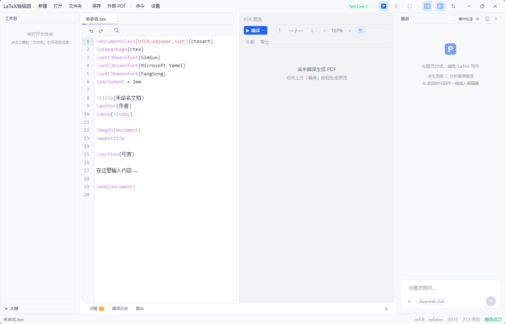

本文介绍一款开源的本地 LaTeX 桌面编辑器，名为墨灵 TeX（产品名 LaTeX编辑器）。 面向所有需要在 Windows 上写 LaTeX 的用户，中文论文、英文论文、实验报告、 幻灯片均可。软件采用 Electron 33 + Vue 3 + TypeScript 技术栈实现， 以 MIT 协议发布。安装包约 96 MB，运行时内存占用低于 200 MB，不依赖网络， 数据全部保留在本机。
开发背景
现有 LaTeX 写作工具可分为三类。Overleaf 提供云端实时协作与编译，但依赖网络与账号， 免费版功能受限，文档存储于远程服务器。TeXstudio 功能完整、本地运行，但上手 需要一定配置，且未集成 AI 能力。VS Code 配合 LaTeX Workshop 扩展可覆盖大部分需求，但对非开发背景用户而言，扩展安装与 latexmk 配置的 门槛偏高。
墨灵 TeX 的设计目标是让 LaTeX 开箱即用，装好就能写，无需配置环境。 同时将 AI 助手以可操作项目文件的方式集成进编辑流程，而非仅提供一个 独立的对话窗口。
功能概览
下表列出墨灵 TeX 与 Overleaf、TeXstudio 在主要能力上的对比。
| 能力 | 墨灵 TeX | Overleaf | TeXstudio |
|---|---|---|---|
| 完全本地运行 | 是 | 否，云端存储 | 是 |
| 无需注册或联网 | 是 | 否 | 是 |
| 内置 AI 助手 | 是，墨灵 | 付费功能 | 否 |
| AI 可读写项目文件 | Agent 模式 | 否 | 否 |
| 开箱即用（无需配置） | 是 | 需账号与网络 | 需手动配置 |
| SyncTeX 正反向同步 | 支持 | 支持 | 支持 |
| 安装包体积 | 约 96 MB | — | 约 80 MB |
| 开源协议 | MIT | 部分收费 | GPL |
界面布局
界面采用四区域布局，依次为文件树、代码编辑区、PDF 预览区和 AI 助手面板。 各区域宽度可拖拽调整，位置可以互换。AI 面板可关闭，关闭后界面仅保留 文件管理、编辑与预览功能。

开箱即用
装好 TeX Live，打开软件即可开始写作，无需配置编译器路径、字体宏包或扩展。 对中文用户尤其友好，具体措施如下。
- 默认编译器设为 XeLaTeX。该引擎对 Unicode 与系统字体支持较好，是中文场景的常用选择。
- 新建中文文档时自动加载 ctex 宏集，用户无需在导言区手动添加相关包。
- 自动检测 Windows 系统已安装的中文字体（宋体、黑体、微软雅黑、仿宋等），并在设置中提供字体选择。
- 编辑器按字符断行，中文输入法的候选框定位正确，行高按中文阅读习惯设置。
AI 助手
软件内置 AI 助手「墨灵」，通过 Agent 模式工作。与仅提供对话窗口的方案不同， Agent 模式允许模型读取项目目录中的文件、搜索内容、修改 .tex 源文件、 触发编译，并根据编译结果继续操作。

典型操作
局部文本替换。 在编辑器中选中一段文字后发起对话，所选内容会自动附带行号发送给模型。 模型通过 replace_text 接口执行精确替换，不会重写整个文件。
编译错误处理。 编译失败时，可将日志提供给模型（或由模型自行读取）。模型定位错误位置、 修改源码或导言区后重新触发编译，并检查结果。
参考文献插入。 可要求模型生成 BibTeX 条目并插入 \cite 命令。所引文献的真实性需要用户自行核实。
多文件项目。 以文件夹方式打开项目后，模型可在多个 .tex 文件之间跳转并执行修改。 例如统一调整某一章的公式编号格式。
API 配置
墨灵对接任意 OpenAI 兼容接口。DeepSeek、Moonshot、通义、OpenAI 等服务均可使用。 在设置中填写 API 地址与密钥，获取模型列表并勾选即可启用。
设置 → 墨灵 AI 助手
API 地址 https://api.deepseek.com/v1
API Key sk-xxxx
模型 deepseek-chat（已勾选）其他功能
- 编译引擎支持 XeLaTeX、pdfLaTeX、LuaLaTeX 与 latexmk。按 F5 触发编译。BibTeX 的多轮编译流程自动执行。
- SyncTeX 同步。编辑器中 Ctrl+Click 跳转 PDF 对应位置，PDF 中 Ctrl+Click 跳回源码行。
- 编译日志面板支持错误与警告高亮、按类型过滤，点击错误可跳转至源码行。
- 智能补全。cite 环境自动从 .bib 文件提取引用键，ref 环境自动列出已定义的 label。
- 支持深色、浅色与跟随系统三种主题。
技术实现
| 层级 | 选型 |
|---|---|
| 桌面框架 | Electron 33 |
| 前端框架 | Vue 3 + TypeScript |
| 代码编辑器 | CodeMirror 6 |
| PDF 预览 | PDF.js |
| 状态管理 | Pinia |
| 构建工具 | electron-vite |
| 编译调用 | 本地 TeX Live，不内置发行版 |
选择 Electron 而非 Tauri，主要出于团队对 Web 技术栈的熟悉程度， 以及 CodeMirror 6 与 PDF.js 在 Electron 生态中的集成成本较低。 代价是安装包体积大于 Tauri 方案，约 96 MB，对桌面应用可接受。
安装与下载
可从 GitHub Releases 获取安装包。安装版为 exe 格式，双击安装；便携版为 zip 压缩包，解压后可直接运行。
欢迎各位用户试用。如果觉得这个项目对你有帮助，还请到 GitHub 仓库点一下 Star（星星）， 这是对开源项目最直接的支持。
Overleaf 的协作能力与 TeXstudio 的成熟度是既有优势，墨灵 TeX 不试图替代二者。 本项目针对的场景是，希望打开就能用、不想折腾配置、数据不离开本机、以及希望 AI 直接参与文件级编辑的用户。若这些需求与你相关，欢迎下载试用， 问题与建议可提交至项目 Issue。